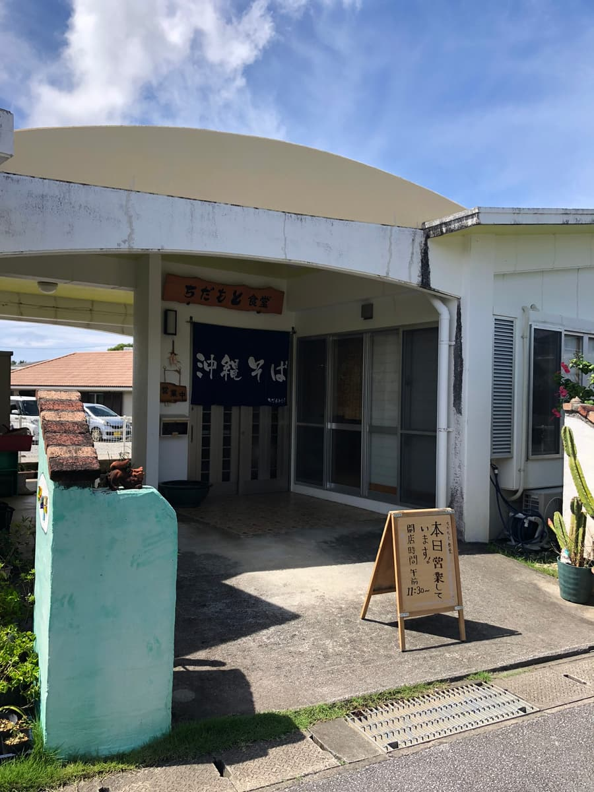
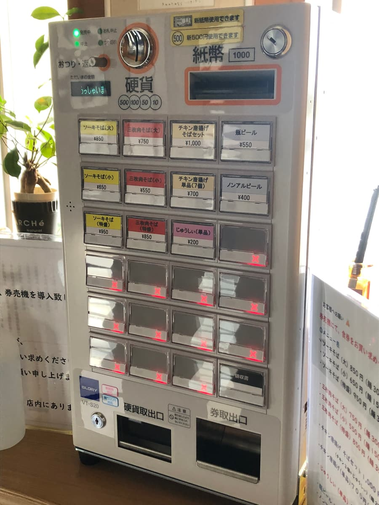
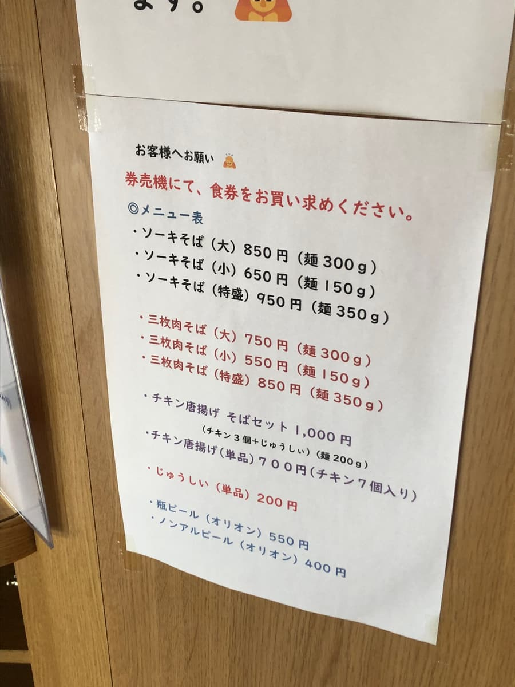
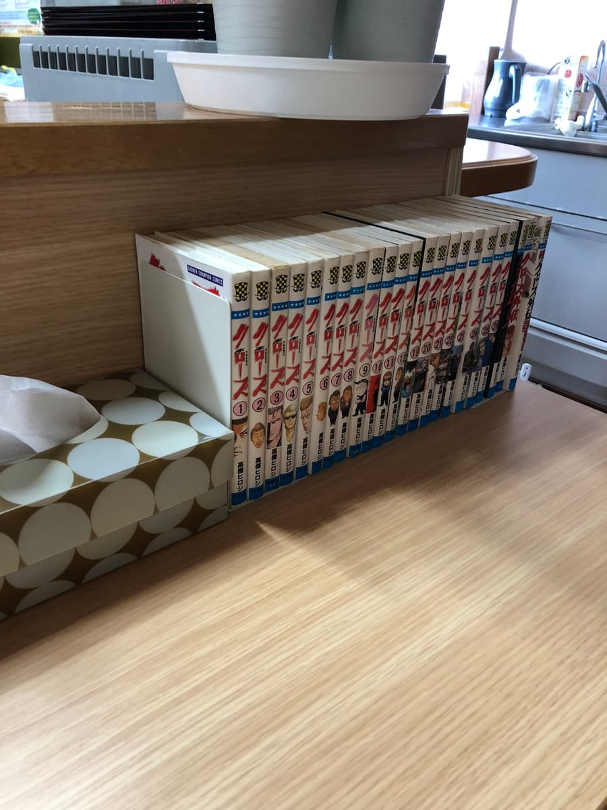
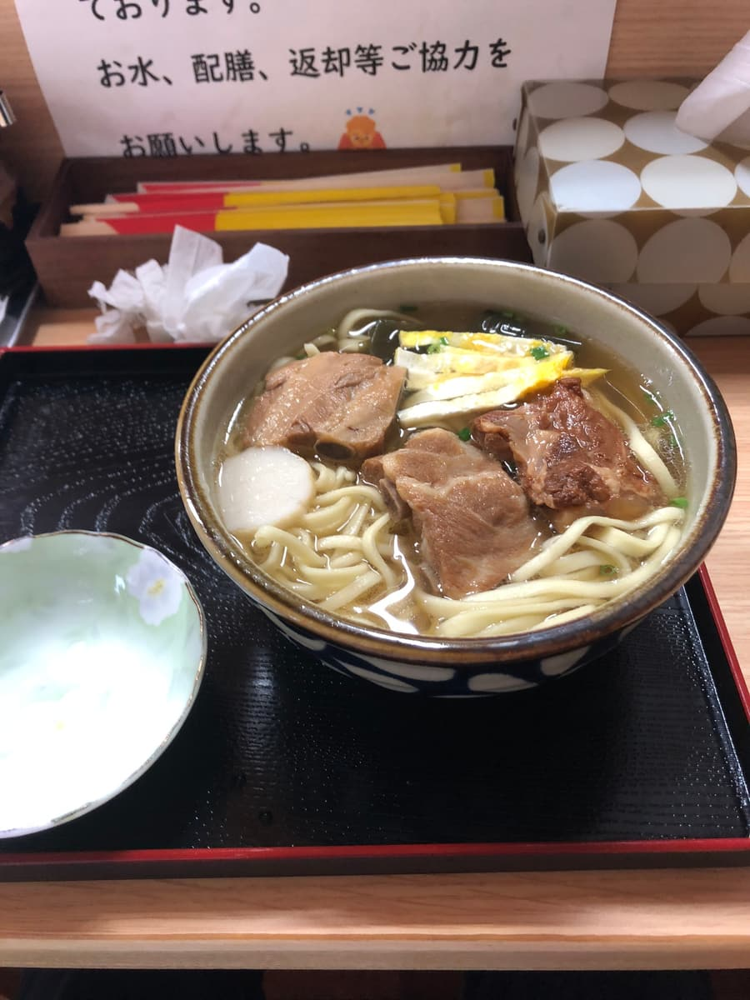
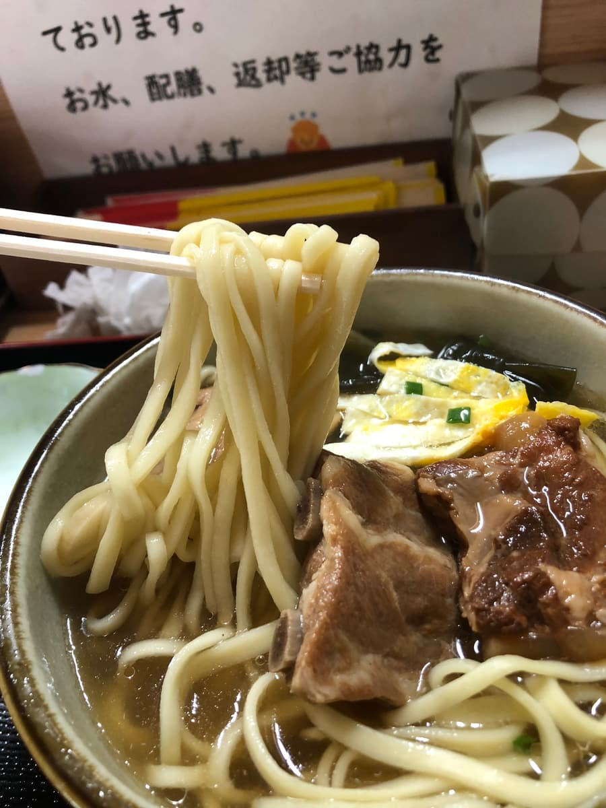

这篇文章是用AI（Claude 3.5 Sonnet）写成后再由我部分补写的哈哈🍜✨
2024年10月吃的😄 这次要为大家介绍位在名护市大北的「千田本食堂」。
建筑外观像一栋独栋住宅，入口挂着很有韵味的暖帘。散发着冲绳传统食堂的氛围呢😌


走进店里，设有售票机，我一边看菜单一边决定点「排骨面」。价格是850日圆。菜单的选择不算多，给人简单的冲绳面专卖店的印象。



点餐后过了一会儿，「排骨面」送来了。首先品尝汤头。柴鱼高汤味十足的汤头，香气也很好，是普通好吃的感觉😋

接着吃面。中粗的直面，口感偏软。我个人觉得再有嚼劲一点也不错，和汤头的搭配算普通。
配料的软骨排骨和带骨排骨都很入味，昆布结也是很好的点缀。不过肉有一点偏韧的部分，觉得再软嫩一点会更好🤔
评分（9.5分/15分）：总的来说，是普通好吃的冲绳面。来名护市时，可以当作能轻松顺道造访的平民冲绳面店选项之一😊 要不要来吃一次看看呢？
面：★★★☆☆（3）
汤头：★★★✬☆（3.5）
配料：★★★☆☆（3）